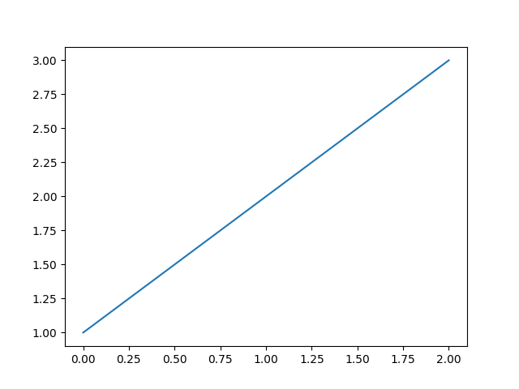

Note
Click here to download the full example code or to run this example in your browser via Binder
Capturing output representations¶
This example demonstrates how the capture_repr configuration option
(Controlling what output is captured)
works. The default capture_repr setting is
('_repr_html_', '__repr__') and was used to build this
Mkdocs-Gallery documentation. The output that is captured with this setting
is demonstrated in this example. Differences in outputs that would be captured
with other capture_repr settings are also explained.
Nothing is captured for the code block below because no data is directed to standard output and the last statement is an assignment, not an expression.
# example 1
a = 2
b = 10
If you did wish to capture the value of b, you would need to use:
# example 2
a = 2
b = 10
b # this is an expression
Out:
10
Mkdocs-Gallery first attempts to capture the _repr_html_ of b as this
is the first 'representation' method in the capture_repr tuple. As this
method does not exist for b, Mkdocs-Gallery moves on and tries to capture
the __repr__ method, which is second in the tuple. This does exist for
b so it is captured and the output is seen above.
A pandas dataframe is used in the code block below to provide an example of
an expression with a _repr_html_ method.
# example 3
import pandas as pd
df = pd.DataFrame(data = {'col1': [1, 2], 'col2': [3, 4]})
df
The pandas dataframe df has both a __repr__ and _repr_html_
method. As _repr_html_ appears first in the capture_repr tuple, the
_repr_html_ is captured in preference to __repr__.
Statsmodels tables should also be styled appropriately:
# example 4
import numpy as np
import statsmodels.iolib.table
statsmodels.iolib.table.SimpleTable(np.zeros((3, 3)))
For the example below, there is data directed to standard output and the last statement is an expression.
# example 5
print('Hello world')
a + b
Out:
Hello world
12
print() outputs to standard output, which is always captured. The
string 'Hello world' is thus captured. A 'representation' of the last
expression is also captured. Again, since this expression a + b does not
have a _repr_html_ method, the __repr__ method is captured.
Matplotlib output¶
Matplotlib function calls generally return a Matplotlib object as well as
outputting the figure. For code blocks where the last statement is a
Matplotlib expression, a 'representation' of the object will be captured, as
well as the plot. This is because Matplotlib objects have a __repr__
method and our capture_repr tuple contains __repr__. Note that
Matplotlib objects also have a __str__ method.
In the example below, matplotlib.pyplot.plot() returns a list of
Line2D objects representing the plotted data and the __repr__ of the
list is captured as well as the figure:
import matplotlib.pyplot as plt
plt.plot([1,2,3])

Out:
[<matplotlib.lines.Line2D object at 0x7f1d25a56d00>]
To avoid capturing the text representation, you can assign the last Matplotlib expression to a temporary variable:
_ = plt.plot([1,2,3])

Alternatively, you can add plt.show(), which does not return anything,
to the end of the code block:
plt.plot([1,2,3])
plt.show()
Out:
/home/runner/work/mkdocs-gallery/mkdocs-gallery/examples/plot_03_capture_repr.py:102: UserWarning:
FigureCanvasAgg is non-interactive, and thus cannot be shown
The capture_repr configuration¶
The capture_repr configuration is ('_repr_html_', '__repr__') by
default. This directs Mkdocs-Gallery to capture 'representations' of the last
statement of a code block, if it is an expression. Mkdocs-Gallery does
this according to the order 'representations' appear in the tuple.
With the default capture_repr setting, _repr_html_ is attempted to be
captured first. If this method does not exist, the __repr__ method would be
captured. If the __repr__ also does not exist (unlikely for non-user
defined objects), nothing would be captured. For example, if the the
configuration was set to 'capture_repr': ('_repr_html_') nothing would be
captured for example 2 as b does not have a _repr_html_.
You can change the 'representations' in the capture_repr tuple to finely
tune what is captured in your example .py files.
To only capture data directed to standard output you can set capture_repr
to be an empty tuple: capture_repr: (). With this setting, only data
directed to standard output is captured. For the examples above, output would
only be captured for example 4. Although the last statement is an expression
for examples 2, 3 and 4 no 'representation' of the last expression would be
output. You would need to add print() to the last expression to capture
a 'representation' of it.
The empty tuple setting imitates the behaviour of Sphinx-Gallery prior to v0.5.0, when this configuration was introduced.
Total running time of the script: ( 0 minutes 0.593 seconds)

Download Python source code: plot_03_capture_repr.py